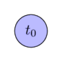
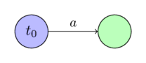
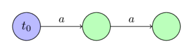
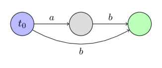
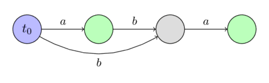
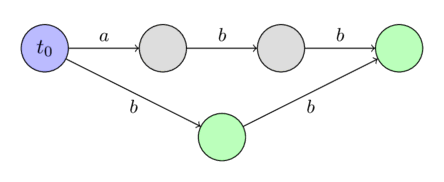
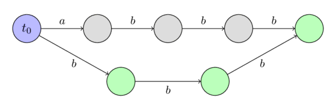
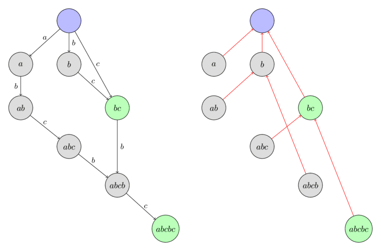

Automat hậu tố (Suffix Automaton)¶
Automat hậu tố (Suffix Automaton) là một cấu trúc dữ liệu mạnh mẽ cho phép giải quyết nhiều bài toán liên quan đến xâu.
Ví dụ, bạn có thể tìm kiếm tất cả các lần xuất hiện của một xâu trong một xâu khác, hoặc đếm số lượng các xâu con khác nhau của một xâu cho trước. Cả hai bài toán này đều có thể được giải quyết trong thời gian tuyến tính với sự trợ giúp của automat hậu tố.
Về mặt trực giác, một automat hậu tố có thể được hiểu là một dạng nén của tất cả các xâu con của một xâu cho trước. Một điều ấn tượng là automat hậu tố chứa tất cả thông tin này dưới dạng nén cực kỳ hiệu quả. Với một xâu có độ dài $n$, nó chỉ yêu cầu $O(n)$ bộ nhớ. Hơn nữa, nó cũng có thể được xây dựng trong thời gian $O(n)$ (nếu chúng ta coi kích thước $k$ của bảng chữ cái là một hằng số), nếu không, cả độ phức tạp bộ nhớ và thời gian sẽ là $O(n \log k)$.
Tính tuyến tính về kích thước của automat hậu tố được phát hiện lần đầu vào năm 1983 bởi Blumer và cộng sự, và vào năm 1985, các thuật toán tuyến tính đầu tiên để xây dựng nó đã được trình bày bởi Crochemore và Blumer.
Định nghĩa của automat hậu tố¶
Automat hậu tố cho một xâu $s$ cho trước là một DFA (automat hữu hạn đơn định) tối thiểu chấp nhận tất cả các hậu tố của xâu $s$.
Nói cách khác:
- Automat hậu tố là một đồ thị có hướng không chu trình (DAG). Các đỉnh được gọi là các trạng thái, và các cạnh được gọi là các chuyển tiếp giữa các trạng thái.
- Một trong các trạng thái $t_0$ là trạng thái khởi đầu, và nó phải là nguồn của đồ thị (tất cả các trạng thái khác đều có thể đi tới từ $t_0$).
- Mỗi chuyển tiếp được gắn nhãn với một ký tự. Tất cả các chuyển tiếp xuất phát từ một trạng thái phải có các nhãn khác nhau.
- Một hoặc nhiều trạng thái được đánh dấu là trạng thái kết thúc. Nếu chúng ta bắt đầu từ trạng thái khởi đầu $t_0$ và di chuyển dọc theo các chuyển tiếp đến một trạng thái kết thúc, thì nhãn của các chuyển tiếp đã đi qua phải tạo thành một trong các hậu tố của xâu $s$. Mỗi hậu tố của $s$ phải có thể tạo thành bằng cách sử dụng một đường đi từ $t_0$ đến một trạng thái kết thúc.
- Automat hậu tố chứa số lượng đỉnh tối thiểu trong số tất cả các automat thỏa mãn các điều kiện được mô tả ở trên.
Tính chất xâu con¶
Tính chất đơn giản và quan trọng nhất của automat hậu tố là nó chứa thông tin về tất cả các xâu con của xâu $s$. Bất kỳ đường đi nào bắt đầu tại trạng thái khởi đầu $t_0$, nếu chúng ta viết ra các nhãn của các chuyển tiếp, sẽ tạo thành một xâu con của $s$. Ngược lại, mọi xâu con của $s$ tương ứng với một đường đi nhất định bắt đầu tại $t_0$.
Để đơn giản hóa giải thích, chúng ta sẽ nói rằng xâu con tương ứng với đường đi đó (bắt đầu tại $t_0$ và các nhãn tạo thành xâu con đó). Ngược lại, chúng ta nói rằng bất kỳ đường đi nào cũng tương ứng với xâu được tạo thành bởi các nhãn của nó.
Một hoặc nhiều đường đi có thể dẫn đến một trạng thái. Vì vậy, chúng ta sẽ nói rằng một trạng thái tương ứng với tập hợp các xâu tương ứng với các đường đi đó.
Ví dụ về các automat hậu tố được xây dựng¶
Dưới đây chúng tôi sẽ trình bày một số ví dụ về automat hậu tố cho một vài xâu đơn giản.
Chúng ta sẽ ký hiệu trạng thái khởi đầu bằng màu xanh dương và các trạng thái kết thúc bằng màu xanh lá cây.
Cho xâu $s =~ \text{""}$:

Cho xâu $s =~ \text{"a"}$:

Cho xâu $s =~ \text{"aa"}$:

Cho xâu $s =~ \text{"ab"}$:

Cho xâu $s =~ \text{"aba"}$:

Cho xâu $s =~ \text{"abb"}$:

Cho xâu $s =~ \text{"abbb"}$:

Xây dựng trong thời gian tuyến tính¶
Trước khi mô tả thuật toán xây dựng automat hậu tố trong thời gian tuyến tính, chúng ta cần giới thiệu một vài khái niệm mới và các chứng minh đơn giản, vốn rất quan trọng để hiểu việc xây dựng.
Các vị trí kết thúc $endpos$¶
Xét bất kỳ xâu con không rỗng $t$ của xâu $s$. Chúng ta sẽ ký hiệu $endpos(t)$ là tập hợp tất cả các vị trí trong xâu $s$ mà các lần xuất hiện của $t$ kết thúc. Ví dụ, chúng ta có $endpos(\text{"bc"}) = \{2, 4\}$ cho xâu $\text{"abcbc"}$.
Chúng ta sẽ gọi hai xâu con $t_1$ và $t_2$ là $endpos$-tương đương, nếu tập hợp kết thúc của chúng trùng nhau: $endpos(t_1) = endpos(t_2)$. Như vậy, tất cả các xâu con không rỗng của xâu $s$ có thể được phân rã thành các lớp tương đương dựa trên các tập hợp $endpos$.
Hóa ra là, trong một automat hậu tố, các xâu con $endpos$-tương đương tương ứng với cùng một trạng thái. Nói cách khác, số lượng trạng thái trong một automat hậu tố bằng số lượng các lớp tương đương giữa tất cả các xâu con, cộng với trạng thái khởi đầu. Mỗi trạng thái của automat hậu tố tương ứng với một hoặc nhiều xâu con có cùng giá trị $endpos$.
Sau đây chúng ta sẽ mô tả thuật toán xây dựng sử dụng giả định này. Chúng ta sẽ thấy rằng tất cả các tính chất yêu cầu của một automat hậu tố, ngoại trừ tính tối thiểu, đều được thỏa mãn. Tính tối thiểu tuân theo định lý Nerode (sẽ không được chứng minh trong bài viết này).
Chúng ta có thể đưa ra một vài quan sát quan trọng liên quan đến các giá trị $endpos$:
Bổ đề 1: Hai xâu con không rỗng $u$ và $w$ (với $length(u) \le length(w)$) là $endpos$-tương đương khi và chỉ khi xâu $u$ xuất hiện trong $s$ chỉ dưới dạng hậu tố của $w$.
Chứng minh là rõ ràng. Nếu $u$ và $w$ có cùng giá trị $endpos$, thì $u$ là một hậu tố của $w$ và chỉ xuất hiện dưới dạng hậu tố của $w$ trong $s$. Và nếu $u$ là một hậu tố của $w$ và chỉ xuất hiện dưới dạng hậu tố trong $s$, thì các giá trị $endpos$ bằng nhau theo định nghĩa.
Bổ đề 2: Xét hai xâu con không rỗng $u$ và $w$ (với $length(u) \le length(w)$). Khi đó, các tập hợp $endpos$ của chúng hoặc không giao nhau hoàn toàn, hoặc $endpos(w)$ là tập con của $endpos(u)$. Điều này phụ thuộc vào việc $u$ có là hậu tố của $w$ hay không.
Chứng minh: Nếu các tập hợp $endpos(u)$ và $endpos(w)$ có ít nhất một phần tử chung, thì cả hai xâu $u$ và $w$ đều kết thúc tại vị trí đó, nghĩa là $u$ là một hậu tố của $w$. Nhưng sau đó, tại mỗi lần xuất hiện của $w$, xâu con $u$ cũng xuất hiện, điều này có nghĩa là $endpos(w)$ là tập con của $endpos(u)$.
Bổ đề 3: Xét một lớp tương đương $endpos$. Sắp xếp tất cả các xâu con trong lớp này theo độ dài giảm dần. Khi đó, trong dãy kết quả, mỗi xâu con sẽ ngắn hơn xâu trước một đơn vị và đồng thời là hậu tố của xâu trước đó. Nói cách khác, trong cùng một lớp tương đương, các xâu con ngắn hơn thực sự là các hậu tố của các xâu con dài hơn, và chúng chiếm tất cả các độ dài có thể trong một khoảng $[x; y]$ nhất định.
Chứng minh: Cố định một lớp tương đương $endpos$. Nếu nó chỉ chứa một xâu, thì bổ đề hiển nhiên đúng. Bây giờ giả sử số lượng xâu trong lớp lớn hơn một.
Theo Bổ đề 1, hai xâu $endpos$-tương đương khác nhau luôn có dạng mà xâu ngắn hơn là một hậu tố thực sự của xâu dài hơn. Do đó, không thể có hai xâu cùng độ dài trong lớp tương đương.
Ký hiệu $w$ là xâu dài nhất và $u$ là xâu ngắn nhất trong lớp tương đương. Theo Bổ đề 1, xâu $u$ là một hậu tố thực sự của xâu $w$. Xét bất kỳ hậu tố nào của $w$ có độ dài trong khoảng $[length(u); length(w)]$. Dễ thấy rằng hậu tố này cũng nằm trong cùng lớp tương đương đó. Bởi vì hậu tố này chỉ có thể xuất hiện dưới dạng hậu tố của $w$ trong xâu $s$ (vì hậu tố ngắn hơn $u$ cũng chỉ xuất hiện trong $s$ dưới dạng hậu tố của $w$). Do đó, theo Bổ đề 1, hậu tố này $endpos$-tương đương với xâu $w$.
Liên kết hậu tố $link$¶
Xét một trạng thái $v \ne t_0$ trong automat. Như chúng ta đã biết, trạng thái $v$ tương ứng với lớp các xâu có cùng giá trị $endpos$. Và nếu ký hiệu $w$ là xâu dài nhất trong số các xâu này, thì tất cả các xâu khác đều là hậu tố của $w$.
Chúng ta cũng biết một vài hậu tố đầu tiên của xâu $w$ (nếu xét các hậu tố theo thứ tự độ dài giảm dần) đều nằm trong lớp tương đương này, và tất cả các hậu tố khác (ít nhất một hậu tố khác - hậu tố rỗng) nằm trong các lớp khác. Chúng ta ký hiệu $t$ là hậu tố lớn nhất như vậy, và tạo một liên kết hậu tố trỏ đến nó.
Nói cách khác, một liên kết hậu tố (suffix link) $link(v)$ dẫn đến trạng thái tương ứng với hậu tố dài nhất của $w$ nằm trong một lớp tương đương $endpos$ khác.
Ở đây chúng ta giả định trạng thái khởi đầu $t_0$ tương ứng với lớp tương đương của chính nó (chỉ chứa xâu rỗng), và để thuận tiện, chúng ta đặt $endpos(t_0) = \{-1, 0, \dots, length(s)-1\}$.
Bổ đề 4: Các liên kết hậu tố tạo thành một cây với gốc là $t_0$.
Chứng minh: Xét một trạng thái tùy ý $v \ne t_0$. Một liên kết hậu tố $link(v)$ dẫn đến một trạng thái tương ứng với các xâu có độ dài nhỏ hơn nghiêm ngặt (điều này tuân theo định nghĩa của liên kết hậu tố và Bổ đề 3). Do đó, bằng cách di chuyển dọc theo các liên kết hậu tố, sớm muộn gì chúng ta cũng sẽ đến trạng thái khởi đầu $t_0$, tương ứng với xâu rỗng.
Bổ đề 5: Nếu chúng ta xây dựng một cây sử dụng các tập hợp $endpos$ (theo quy tắc tập hợp của nút cha chứa các tập hợp của tất cả các nút con như các tập con), thì cấu trúc sẽ trùng với cây của các liên kết hậu tố.
Chứng minh: Việc chúng ta có thể xây dựng một cây bằng cách sử dụng các tập hợp $endpos$ tuân theo trực tiếp từ Bổ đề 2 (bất kỳ hai tập hợp nào hoặc không giao nhau hoặc tập này là tập con của tập kia).
Xét một trạng thái tùy ý $v \ne t_0$ và liên kết hậu tố $link(v)$ của nó. Từ định nghĩa của liên kết hậu tố và Bổ đề 2, suy ra rằng:
Điều này cùng với bổ đề trước chứng minh khẳng định: cây của các liên kết hậu tố thực chất là cây của các tập hợp $endpos$.
Dưới đây là một ví dụ về cây các liên kết hậu tố trong automat hậu tố được xây dựng cho xâu $\text{"abcbc"}$. Các nút được gán nhãn với xâu con dài nhất từ lớp tương đương tương ứng.

Tóm tắt¶
Trước khi chuyển sang thuật toán, chúng ta tóm tắt các kiến thức đã tích lũy và giới thiệu một vài ký hiệu bổ trợ.
- Các xâu con của xâu $s$ có thể được phân rã thành các lớp tương đương dựa trên các vị trí kết thúc $endpos$.
- Automat hậu tố bao gồm trạng thái khởi đầu $t_0$, cũng như một trạng thái cho mỗi lớp tương đương $endpos$.
- Với mỗi trạng thái $v$, một hoặc nhiều xâu con khớp với nó. Chúng ta ký hiệu $longest(v)$ là xâu dài nhất như vậy và $len(v)$ là độ dài của nó. Chúng ta ký hiệu $shortest(v)$ là xâu con ngắn nhất như vậy và $minlen(v)$ là độ dài của nó. Khi đó, tất cả các xâu tương ứng với trạng thái này là các hậu tố khác nhau của xâu $longest(v)$ và có tất cả các độ dài có thể trong khoảng $[minlen(v); len(v)]$.
- Với mỗi trạng thái $v \ne t_0$, một liên kết hậu tố được định nghĩa là một liên kết dẫn đến trạng thái tương ứng với hậu tố của xâu $longest(v)$ có độ dài $minlen(v) - 1$. Các liên kết hậu tố tạo thành một cây với gốc tại $t_0$, và đồng thời cây này tạo thành mối quan hệ bao hàm giữa các tập hợp $endpos$.
- Chúng ta có thể biểu diễn $minlen(v)$ cho $v \ne t_0$ sử dụng liên kết hậu tố $link(v)$ như sau:
- Nếu chúng ta bắt đầu từ một trạng thái tùy ý $v_0$ và đi theo các liên kết hậu tố, sớm muộn gì chúng ta cũng sẽ đạt đến trạng thái khởi đầu $t_0$. Trong trường hợp này, chúng ta thu được một dãy các khoảng rời nhau $[minlen(v_i); len(v_i)]$, hợp lại tạo thành khoảng liên tục $[0; len(v_0)]$.
Thuật toán¶
Bây giờ chúng ta có thể chuyển sang thuật toán. Thuật toán sẽ là trực tuyến (online), nghĩa là chúng ta sẽ thêm từng ký tự của xâu vào một và sửa đổi automat tương ứng ở mỗi bước.
Để đạt được mức tiêu thụ bộ nhớ tuyến tính, chúng ta sẽ chỉ lưu trữ các giá trị $len$, $link$ và một danh sách các chuyển tiếp trong mỗi trạng thái. Chúng ta sẽ không đánh dấu các trạng thái kết thúc (nhưng sau đó sẽ chỉ ra cách sắp xếp các nhãn này sau khi xây dựng xong automat hậu tố).
Ban đầu, automat bao gồm một trạng thái duy nhất $t_0$, sẽ là chỉ số $0$ (các trạng thái còn lại sẽ nhận các chỉ số $1, 2, \dots$). Chúng ta gán cho nó $len = 0$ và $link = -1$ để thuận tiện ($-1$ sẽ là một trạng thái giả định, không tồn tại).
Bây giờ toàn bộ nhiệm vụ chuyển thành việc cài đặt quá trình thêm một ký tự $c$ vào cuối xâu hiện tại. Hãy mô tả quá trình này:
- Để $last$ là trạng thái tương ứng với toàn bộ xâu trước khi thêm ký tự $c$. (Ban đầu chúng ta đặt $last = 0$, và chúng ta sẽ thay đổi $last$ trong bước cuối cùng của thuật toán cho phù hợp).
- Tạo một trạng thái mới $cur$, và gán cho nó $len(cur) = len(last) + 1$. Giá trị $link(cur)$ chưa được biết tại thời điểm này.
- Bây giờ chúng ta thực hiện quy trình sau: Bắt đầu tại trạng thái $last$. Trong khi không có chuyển tiếp qua chữ cái $c$, chúng ta sẽ thêm một chuyển tiếp đến trạng thái $cur$ và đi theo liên kết hậu tố. Nếu tại một thời điểm nào đó đã tồn tại một chuyển tiếp qua chữ cái $c$, thì chúng ta sẽ dừng lại và ký hiệu trạng thái này là $p$.
- Nếu chúng ta không tìm thấy trạng thái $p$ như vậy, thì chúng ta đã đạt đến trạng thái giả định $-1$, khi đó chúng ta chỉ cần gán $link(cur) = 0$ và thoát ra.
- Giả sử bây giờ chúng ta đã tìm thấy một trạng thái $p$, từ đó tồn tại một chuyển tiếp qua chữ cái $c$. Chúng ta sẽ ký hiệu trạng thái mà chuyển tiếp dẫn đến là $q$.
- Bây giờ chúng ta có hai trường hợp. Hoặc $len(p) + 1 = len(q)$, hoặc không.
- Nếu $len(p) + 1 = len(q)$, thì chúng ta chỉ cần gán $link(cur) = q$ và thoát ra.
-
Nếu không, việc này phức tạp hơn một chút. Cần phải nhân bản (clone) trạng thái $q$: chúng ta tạo một trạng thái mới $clone$, sao chép tất cả dữ liệu từ $q$ (liên kết hậu tố và chuyển tiếp) ngoại trừ giá trị $len$. Chúng ta sẽ gán $len(clone) = len(p) + 1$.
Sau khi nhân bản, chúng ta hướng liên kết hậu tố từ $cur$ đến $clone$, và cũng từ $q$ đến trạng thái nhân bản.
Cuối cùng, chúng ta cần đi từ trạng thái $p$ quay lại bằng cách sử dụng các liên kết hậu tố chừng nào vẫn còn chuyển tiếp qua $c$ đến trạng thái $q$, và chuyển hướng tất cả những chuyển tiếp đó đến trạng thái $clone$.
-
Trong bất kỳ trường hợp nào trong ba trường hợp trên, sau khi hoàn thành quy trình, chúng ta cập nhật giá trị $last$ với trạng thái $cur$.
Nếu chúng ta cũng muốn biết trạng thái nào là kết thúc và trạng thái nào không, chúng ta có thể tìm tất cả các trạng thái kết thúc sau khi xây dựng xong automat hậu tố hoàn chỉnh cho toàn bộ xâu $s$. Để làm điều này, chúng ta lấy trạng thái tương ứng với toàn bộ xâu (được lưu trong biến $last$), và đi theo các liên kết hậu tố của nó cho đến khi đạt đến trạng thái khởi đầu. Chúng ta sẽ đánh dấu tất cả các trạng thái đã ghé thăm là trạng thái kết thúc. Dễ hiểu rằng bằng cách làm như vậy, chúng ta sẽ đánh dấu chính xác các trạng thái tương ứng với tất cả các hậu tố của xâu $s$, vốn chính xác là các trạng thái kết thúc.
Trong phần tiếp theo, chúng ta sẽ xem xét chi tiết từng bước và chứng minh tính đúng đắn của nó.
Ở đây chúng ta chỉ lưu ý rằng, vì chúng ta chỉ tạo một hoặc hai trạng thái mới cho mỗi ký tự của $s$, automat hậu tố chứa số lượng trạng thái tuyến tính.
Tính tuyến tính của số lượng các chuyển tiếp, và nói chung là tính tuyến tính của thời gian chạy thuật toán thì ít rõ ràng hơn, và chúng sẽ được chứng minh sau khi chúng ta chứng minh tính đúng đắn.
Tính đúng đắn¶
-
Chúng ta sẽ gọi một chuyển tiếp $(p, q)$ là liên tục (continuous) nếu $len(p) + 1 = len(q)$. Nếu không, nghĩa là khi $len(p) + 1 < len(q)$, chuyển tiếp đó sẽ được gọi là không liên tục (non-continuous).
Như chúng ta có thể thấy từ mô tả thuật toán, các chuyển tiếp liên tục và không liên tục sẽ dẫn đến các trường hợp khác nhau của thuật toán. Các chuyển tiếp liên tục là cố định và sẽ không bao giờ thay đổi nữa. Ngược lại, chuyển tiếp không liên tục có thể thay đổi khi các chữ cái mới được thêm vào xâu (điểm cuối của cạnh chuyển tiếp có thể thay đổi).
-
Để tránh gây nhầm lẫn, chúng ta sẽ ký hiệu xâu mà automat hậu tố được xây dựng trước khi thêm ký tự hiện tại $c$ là $s$.
-
Thuật toán bắt đầu bằng việc tạo một trạng thái mới $cur$, trạng thái này sẽ tương ứng với toàn bộ xâu $s + c$. Rõ ràng tại sao chúng ta phải tạo một trạng thái mới. Cùng với ký tự mới, một lớp tương đương mới được tạo ra.
-
Sau khi tạo trạng thái mới, chúng ta duyệt qua các liên kết hậu tố bắt đầu từ trạng thái tương ứng với toàn bộ xâu $s$. Đối với mỗi trạng thái, chúng ta cố gắng thêm một chuyển tiếp với ký tự $c$ đến trạng thái mới $cur$. Do đó, chúng ta thêm ký tự $c$ vào mỗi hậu tố của $s$. Tuy nhiên, chúng ta chỉ có thể thêm các chuyển tiếp mới này nếu chúng không xung đột với một chuyển tiếp đã tồn tại. Do đó, ngay khi tìm thấy một chuyển tiếp đã tồn tại với $c$, chúng ta phải dừng lại.
-
Trong trường hợp đơn giản nhất, chúng ta đạt đến trạng thái giả định $-1$. Điều này có nghĩa là chúng ta đã thêm chuyển tiếp với $c$ vào tất cả các hậu tố của $s$. Điều này cũng có nghĩa là ký tự $c$ chưa từng là một phần của xâu $s$ trước đó. Do đó, liên kết hậu tố của $cur$ phải dẫn đến trạng thái $0$.
-
Trong trường hợp thứ hai, chúng ta gặp một chuyển tiếp tồn tại $(p, q)$. Điều này có nghĩa là chúng ta đã cố gắng thêm một xâu $x + c$ (nơi $x$ là một hậu tố của $s$) vào máy vốn đã tồn tại trong máy (xâu $x + c$ đã xuất hiện như một xâu con của $s$). Vì chúng ta giả định rằng automat cho xâu $s$ được xây dựng đúng, chúng ta không nên thêm chuyển tiếp mới ở đây.
Tuy nhiên, có một khó khăn. Liên kết hậu tố từ trạng thái $cur$ nên dẫn đến trạng thái nào? Chúng ta phải tạo một liên kết hậu tố đến một trạng thái mà trong đó xâu dài nhất chính xác là $x + c$, nghĩa là $len$ của trạng thái này phải là $len(p) + 1$. Tuy nhiên, có thể xảy ra trường hợp trạng thái như vậy chưa tồn tại, nghĩa là $len(q) > len(p) + 1$. Trong trường hợp này, chúng ta phải tạo một trạng thái như vậy bằng cách chia tách (splitting) trạng thái $q$.
-
Nếu chuyển tiếp $(p, q)$ hóa ra là liên tục, thì $len(q) = len(p) + 1$. Trong trường hợp này, mọi thứ đều đơn giản. Chúng ta hướng liên kết hậu tố từ $cur$ đến trạng thái $q$.
-
Nếu không, chuyển tiếp là không liên tục, nghĩa là $len(q) > len(p) + 1$. Điều này có nghĩa là trạng thái $q$ không chỉ tương ứng với hậu tố của $s + c$ với độ dài $len(p) + 1$, mà còn với các xâu con dài hơn của $s$. Chúng ta không thể làm gì khác ngoài việc chia tách trạng thái $q$ thành hai trạng thái con, để trạng thái thứ nhất có độ dài $len(p) + 1$.
Làm thế nào để chia tách một trạng thái? Chúng ta nhân bản trạng thái $q$, điều này cung cấp cho chúng ta trạng thái $clone$, và chúng ta đặt $len(clone) = len(p) + 1$. Chúng ta sao chép tất cả các chuyển tiếp từ $q$ đến $clone$, vì chúng ta không muốn thay đổi các đường đi duyệt qua $q$. Ngoài ra, chúng ta đặt liên kết hậu tố từ $clone$ đến mục tiêu của liên kết hậu tố từ $q$, và đặt liên kết hậu tố của $q$ đến trạng thái nhân bản.
Và sau khi chia tách trạng thái, chúng ta đặt liên kết hậu tố từ $cur$ đến $clone$.
Trong bước cuối cùng, chúng ta thay đổi một số chuyển tiếp thành $q$, chúng ta chuyển hướng chúng đến $clone$. Những chuyển tiếp nào chúng ta phải thay đổi? Chỉ cần chuyển hướng các chuyển tiếp tương ứng với tất cả các hậu tố của xâu $w + c$ (nơi $w$ là xâu dài nhất của $p$), nghĩa là chúng ta cần tiếp tục di chuyển dọc theo các liên kết hậu tố, bắt đầu từ đỉnh $p$ cho đến khi đạt đến trạng thái giả định $-1$ hoặc một chuyển tiếp dẫn đến trạng thái khác với $q$.
Số lượng thao tác tuyến tính¶
Đầu tiên, chúng ta ngay lập tức giả định rằng kích thước của bảng chữ cái là hằng số. Nếu không, thì không thể nói về độ phức tạp thời gian tuyến tính. Danh sách các chuyển tiếp từ một đỉnh sẽ được lưu trữ trong một cây cân bằng, cho phép bạn thực hiện các thao tác tìm kiếm khóa và thêm khóa một cách nhanh chóng. Do đó, nếu chúng ta ký hiệu $k$ là kích thước của bảng chữ cái, thì hành vi tiệm cận của thuật toán sẽ là $O(n \log k)$ với $O(n)$ bộ nhớ. Tuy nhiên, nếu bảng chữ cái đủ nhỏ, bạn có thể hy sinh bộ nhớ bằng cách tránh sử dụng cây cân bằng và lưu trữ các chuyển tiếp tại mỗi đỉnh dưới dạng một mảng có độ dài $k$ (để tìm kiếm nhanh theo khóa) và một danh sách động (để duyệt nhanh tất cả các khóa có sẵn). Như vậy, chúng ta đạt được độ phức tạp thời gian $O(n)$ cho thuật toán, nhưng với cái giá là độ phức tạp bộ nhớ $O(n k)$.
Vì vậy, chúng ta sẽ coi kích thước của bảng chữ cái là hằng số, nghĩa là mỗi thao tác tìm kiếm chuyển tiếp trên một ký tự, thêm một chuyển tiếp, tìm kiếm chuyển tiếp tiếp theo - tất cả các thao tác này đều có thể được thực hiện trong $O(1)$.
Nếu chúng ta xét tất cả các phần của thuật toán, thì nó chứa ba vị trí trong thuật toán mà độ phức tạp tuyến tính không rõ ràng:
- Vị trí thứ nhất là việc duyệt qua các liên kết hậu tố từ trạng thái $last$, thêm các chuyển tiếp với ký tự $c$.
- Vị trí thứ hai là việc sao chép các chuyển tiếp khi trạng thái $q$ được nhân bản thành một trạng thái mới $clone$.
- Vị trí thứ ba là việc thay đổi chuyển tiếp dẫn đến $q$, chuyển hướng chúng đến $clone$.
Chúng ta sử dụng thực tế là kích thước của automat hậu tố (cả về số lượng trạng thái và số lượng chuyển tiếp) là tuyến tính. (Việc chứng minh tính tuyến tính của số lượng trạng thái là chính thuật toán, và việc chứng minh tính tuyến tính của số lượng trạng thái được đưa ra bên dưới, sau khi cài đặt thuật toán).
Do đó, độ phức tạp tổng thể của vị trí thứ nhất và thứ hai là rõ ràng, rốt cuộc thì mỗi thao tác chỉ thêm một chuyển tiếp mới được phân bổ (amortized) vào automat.
Vẫn còn lại việc ước tính độ phức tạp tổng thể của vị trí thứ ba, nơi chúng ta chuyển hướng các chuyển tiếp ban đầu trỏ đến $q$ sang $clone$. Chúng ta ký hiệu $v = longest(p)$. Đây là một hậu tố của xâu $s$, và với mỗi lần lặp, độ dài của nó giảm dần - và do đó vị trí $v$ là hậu tố của xâu $s$ tăng đơn điệu sau mỗi lần lặp. Trong trường hợp này, nếu trước lần lặp đầu tiên của vòng lặp, xâu tương ứng $v$ nằm ở độ sâu $k$ ($k \ge 2$) từ $last$ (bằng cách đếm độ sâu như số lượng các liên kết hậu tố), thì sau lần lặp cuối cùng, xâu $v + c$ sẽ là một liên kết hậu tố thứ $2$ trên đường đi từ $cur$ (nơi sẽ trở thành giá trị $last$ mới).
Do đó, mỗi lần lặp của vòng lặp này dẫn đến việc vị trí của xâu $longest(link(link(last))$ với tư cách là một hậu tố của xâu hiện tại sẽ tăng đơn điệu. Vì vậy, vòng lặp này không thể được thực hiện quá $n$ lần lặp, điều này là yêu cầu cần chứng minh.
Cài đặt¶
Đầu tiên, chúng ta mô tả một cấu trúc dữ liệu sẽ lưu trữ tất cả thông tin về một chuyển tiếp cụ thể ($len$, $link$ và danh sách các chuyển tiếp). Nếu cần, bạn có thể thêm một cờ trạng thái kết thúc ở đây, cũng như các thông tin khác. Chúng ta sẽ lưu trữ danh sách các chuyển tiếp dưới dạng $map$, cho phép chúng ta đạt được tổng bộ nhớ $O(n)$ và thời gian $O(n \log k)$ để xử lý toàn bộ xâu.
struct state {
int len, link;
map<char, int> next;
};
Automat hậu tố sẽ được lưu trữ trong một mảng các cấu trúc này $state$. Chúng ta lưu trữ kích thước hiện tại $sz$ và cũng có biến $last$, trạng thái tương ứng với toàn bộ xâu tại thời điểm hiện tại.
const int MAXLEN = 100000;
state st[MAXLEN * 2];
int sz, last;
Chúng tôi cung cấp một hàm khởi tạo một automat hậu tố (tạo một automat hậu tố với một trạng thái duy nhất).
void sa_init() {
st[0].len = 0;
st[0].link = -1;
sz++;
last = 0;
}
Và cuối cùng, chúng tôi cung cấp cài đặt của hàm chính - hàm thêm ký tự tiếp theo vào cuối dòng hiện tại, xây dựng lại máy tương ứng.
void sa_extend(char c) {
int cur = sz++;
st[cur].len = st[last].len + 1;
int p = last;
while (p != -1 && !st[p].next.count(c)) {
st[p].next[c] = cur;
p = st[p].link;
}
if (p == -1) {
st[cur].link = 0;
} else {
int q = st[p].next[c];
if (st[p].len + 1 == st[q].len) {
st[cur].link = q;
} else {
int clone = sz++;
st[clone].len = st[p].len + 1;
st[clone].next = st[q].next;
st[clone].link = st[q].link;
while (p != -1 && st[p].next[c] == q) {
st[p].next[c] = clone;
p = st[p].link;
}
st[q].link = st[cur].link = clone;
}
}
last = cur;
}
Như đã đề cập ở trên, nếu bạn hy sinh bộ nhớ ($O(n k)$, trong đó $k$ là kích thước bảng chữ cái), thì bạn có thể đạt được thời gian xây dựng máy trong $O(n)$, ngay cả đối với bất kỳ kích thước bảng chữ cái $k$ nào. Nhưng để làm được điều này, bạn sẽ phải lưu trữ một mảng có kích thước $k$ trong mỗi trạng thái (để nhảy nhanh đến chuyển tiếp của chữ cái), và thêm vào đó một danh sách tất cả các chuyển tiếp (để duyệt nhanh qua các chuyển tiếp đó).
Các tính chất bổ sung¶
Số lượng trạng thái¶
Số lượng trạng thái trong một automat hậu tố của xâu $s$ có độ dài $n$ không vượt quá $2n - 1$ (cho $n \ge 2$).
Việc chứng minh chính là thuật toán xây dựng, vì ban đầu automat bao gồm một trạng thái, và trong lần lặp đầu tiên và thứ hai, chỉ một trạng thái duy nhất sẽ được tạo ra, và trong $n-2$ bước còn lại, mỗi bước sẽ tạo ra tối đa $2$ trạng thái.
Tuy nhiên, chúng ta cũng có thể chứng minh ước tính này mà không cần biết thuật toán. Hãy nhớ lại rằng số lượng trạng thái bằng số lượng các tập hợp $endpos$ khác nhau. Ngoài ra, các tập hợp $endpos$ này tạo thành một cây (một đỉnh cha chứa tất cả các tập hợp con của các đỉnh con trong tập hợp của nó). Xét cây này và biến đổi nó một chút: chừng nào nó còn một đỉnh trong với chỉ một đỉnh con (có nghĩa là tập hợp của đỉnh con thiếu ít nhất một vị trí từ tập hợp của đỉnh cha), chúng ta tạo một đỉnh con mới với tập hợp các vị trí bị thiếu. Cuối cùng, chúng ta có một cây trong đó mỗi đỉnh trong có bậc lớn hơn một, và số lượng lá không vượt quá $n$. Do đó, không có quá $2n - 1$ đỉnh trong một cây như vậy.
Giới hạn số lượng trạng thái này thực sự có thể đạt được cho mỗi $n$. Một xâu có thể là:
Trong mỗi lần lặp, bắt đầu từ lần thứ ba, thuật toán sẽ chia tách một trạng thái, kết quả là chính xác $2n - 1$ trạng thái.
Số lượng chuyển tiếp¶
Số lượng chuyển tiếp trong một automat hậu tố của một xâu $s$ có độ dài $n$ không vượt quá $3n - 4$ (cho $n \ge 3$).
Hãy chứng minh điều này:
Trước hết, hãy ước tính số lượng các chuyển tiếp liên tục. Xét một cây khung (spanning tree) của các đường đi dài nhất trong automat bắt đầu từ trạng thái $t_0$. Khung này sẽ chỉ bao gồm các cạnh liên tục, và do đó số lượng của chúng nhỏ hơn số lượng trạng thái, tức là không vượt quá $2n - 2$.
Bây giờ hãy ước tính số lượng các chuyển tiếp không liên tục. Gọi chuyển tiếp không liên tục hiện tại là $(p, q)$ với ký tự $c$. Chúng ta lấy xâu tương ứng $u + c + w$, trong đó xâu $u$ tương ứng với đường đi dài nhất từ trạng thái khởi đầu đến $p$, và $w$ tương ứng với đường đi dài nhất từ $q$ đến bất kỳ trạng thái kết thúc nào. Một mặt, mỗi xâu $u + c + w$ như vậy cho mỗi xâu không hoàn chỉnh sẽ khác nhau (vì các xâu $u$ và $w$ chỉ được hình thành bởi các chuyển tiếp hoàn chỉnh). Mặt khác, mỗi xâu $u + c + w$ như vậy, theo định nghĩa của các trạng thái kết thúc, sẽ là một hậu tố của toàn bộ xâu $s$. Vì chỉ có $n$ hậu tố không rỗng của $s$, và không có xâu nào $u + c + w$ có thể chứa $s$ (vì toàn bộ xâu chỉ chứa các chuyển tiếp hoàn chỉnh), tổng số lượng các chuyển tiếp không hoàn chỉnh không vượt quá $n - 1$.
Kết hợp hai ước tính này lại cho chúng ta giới hạn $3n - 3$. Tuy nhiên, vì số lượng trạng thái tối đa chỉ có thể đạt được với trường hợp kiểm thử $\text{"abbb\dots bbb"}$ và trường hợp này rõ ràng có ít hơn $3n - 3$ chuyển tiếp, chúng ta có giới hạn chặt chẽ hơn là $3n - 4$ cho số lượng chuyển tiếp trong một automat hậu tố.
Giới hạn này cũng có thể đạt được với xâu:
Ứng dụng¶
Ở đây chúng ta xem xét một số bài toán có thể giải quyết bằng cách sử dụng automat hậu tố. Để đơn giản, chúng tôi giả định rằng kích thước bảng chữ cái $k$ là hằng số, cho phép chúng ta coi độ phức tạp của việc thêm một ký tự và duyệt là hằng số.
Kiểm tra sự xuất hiện¶
Cho một văn bản $T$ và nhiều mẫu $P$. Chúng ta phải kiểm tra xem các xâu $P$ có xuất hiện dưới dạng xâu con của $T$ hay không.
Chúng ta xây dựng automat hậu tố của văn bản $T$ trong thời gian $O(length(T))$. Để kiểm tra xem một mẫu $P$ có xuất hiện trong $T$ hay không, chúng ta đi theo các chuyển tiếp, bắt đầu từ $t_0$, theo các ký tự của $P$. Nếu tại một thời điểm nào đó không tồn tại chuyển tiếp, thì mẫu $P$ không xuất hiện dưới dạng xâu con của $T$. Nếu chúng ta có thể xử lý toàn bộ xâu $P$ theo cách này, thì xâu đó xuất hiện trong $T$.
Rõ ràng rằng điều này sẽ mất thời gian $O(length(P))$ cho mỗi xâu $P$. Hơn nữa, thuật toán thực sự tìm thấy độ dài của tiền tố dài nhất của $P$ xuất hiện trong văn bản.
Số lượng các xâu con khác nhau¶
Cho một xâu $S$. Bạn muốn tính số lượng các xâu con khác nhau.
Chúng ta hãy xây dựng một automat hậu tố cho xâu $S$. Mỗi xâu con của $S$ tương ứng với một đường đi nào đó trong automat. Do đó, số lượng các xâu con khác nhau bằng số lượng các đường đi khác nhau trong automat bắt đầu tại $t_0$.
Vì automat hậu tố là một đồ thị có hướng không chu trình, số lượng các con đường khác nhau có thể được tính bằng cách sử dụng quy hoạch động.
Cụ thể, để $d[v]$ là số lượng các con đường bắt đầu tại trạng thái $v$ (bao gồm đường đi có độ dài bằng không). Khi đó chúng ta có công thức truy hồi:
Tức là $d[v]$ có thể được biểu diễn là tổng các câu trả lời cho tất cả các điểm cuối của các chuyển tiếp từ $v$.
Số lượng các xâu con khác nhau là giá trị $d[t_0] - 1$ (vì chúng ta không đếm xâu con rỗng).
Tổng độ phức tạp thời gian: $O(length(S))$
Ngoài ra, chúng ta có thể tận dụng thực tế là mỗi trạng thái $v$ khớp với các xâu con có độ dài $[minlen(v),len(v)]$. Do đó, với $minlen(v) = 1 + len(link(v))$, chúng ta có tổng số xâu con phân biệt tại trạng thái $v$ là $len(v) - minlen(v) + 1 = len(v) - (1 + len(link(v))) + 1 = len(v) - len(link(v))$.
Điều này được trình bày tóm tắt bên dưới:
long long get_diff_strings(){
long long tot = 0;
for(int i = 1; i < sz; i++) {
tot += st[i].len - st[st[i].link].len;
}
return tot;
}
Mặc dù điều này cũng là $O(length(S))$, nó không yêu cầu bộ nhớ bổ sung và không có lệnh gọi đệ quy, do đó chạy nhanh hơn trong thực tế.
Tổng độ dài của tất cả các xâu con khác nhau¶
Cho một xâu $S$. Chúng ta muốn tính tổng độ dài của tất cả các xâu con khác nhau của nó.
Giải pháp tương tự như giải pháp trước, chỉ bây giờ cần xem xét hai đại lượng cho phần quy hoạch động: số lượng các xâu con khác nhau $d[v]$ và tổng độ dài của chúng $ans[v]$.
Chúng ta đã mô tả cách tính $d[v]$ trong bài toán trước. Giá trị $ans[v]$ có thể được tính bằng cách sử dụng công thức truy hồi:
Chúng ta lấy câu trả lời của mỗi đỉnh kề $w$, và thêm vào đó $d[w]$ (vì mỗi xâu con dài hơn một ký tự khi bắt đầu từ trạng thái $v$).
Một lần nữa, bài toán này có thể được tính trong thời gian $O(length(S))$.
Ngoài ra, chúng ta có thể, một lần nữa, tận dụng thực tế là mỗi trạng thái $v$ khớp với các xâu con có độ dài $[minlen(v),len(v)]$. Vì $minlen(v) = 1 + len(link(v))$ và công thức cấp số cộng $S_n = n \cdot \frac{a_1+a_n}{2}$ (trong đó $S_n$ ký hiệu tổng của $n$ số hạng, $a_1$ đại diện cho số hạng đầu, và $a_n$ đại diện cho số hạng cuối), chúng ta có thể tính độ dài của các xâu con tại một trạng thái trong thời gian hằng số. Sau đó, chúng ta tính tổng các giá trị này cho mỗi trạng thái $v \neq t_0$ trong automat. Điều này được thể hiện bằng mã dưới đây:
long long get_tot_len_diff_substings() {
long long tot = 0;
for(int i = 1; i < sz; i++) {
long long shortest = st[st[i].link].len + 1;
long long longest = st[i].len;
long long num_strings = longest - shortest + 1;
long long cur = num_strings * (longest + shortest) / 2;
tot += cur;
}
return tot;
}
Phương pháp này chạy trong thời gian $O(length(S))$, nhưng thử nghiệm cho thấy nhanh gấp 20 lần so với phiên bản quy hoạch động có ghi nhớ trên các xâu ngẫu nhiên. Nó không yêu cầu bộ nhớ bổ sung và không có đệ quy.
Xâu con thứ $k$ theo thứ tự từ điển¶
Cho một xâu $S$. Chúng ta phải trả lời nhiều truy vấn. Với mỗi số $K_i$ cho trước, chúng ta phải tìm xâu thứ $K_i$ trong danh sách tất cả các xâu con đã được sắp xếp theo thứ tự từ điển.
Giải pháp cho bài toán này dựa trên ý tưởng của hai bài toán trước. Xâu con thứ $k$ theo thứ tự từ điển tương ứng với đường đi thứ $k$ theo thứ tự từ điển trong automat hậu tố. Do đó, sau khi đếm số lượng đường đi từ mỗi trạng thái, chúng ta có thể dễ dàng tìm kiếm đường đi thứ $k$ bắt đầu từ gốc của automat.
Điều này mất thời gian $O(length(S))$ để tiền xử lý và sau đó là $O(length(ans) \cdot k)$ cho mỗi truy vấn (trong đó $ans$ là câu trả lời cho truy vấn và $k$ là kích thước của bảng chữ cái).
Dịch chuyển vòng nhỏ nhất¶
Cho một xâu $S$. Chúng ta muốn tìm dịch chuyển vòng (cyclic shift) nhỏ nhất theo thứ tự từ điển.
Chúng ta xây dựng một automat hậu tố cho xâu $S + S$. Khi đó, automat sẽ chứa trong chính nó tất cả các dịch chuyển vòng của xâu $S$ dưới dạng các đường đi.
Do đó, bài toán giảm xuống thành việc tìm đường đi nhỏ nhất theo thứ tự từ điển có độ dài $length(S)$, điều này có thể được thực hiện theo cách tầm thường: chúng ta bắt đầu ở trạng thái khởi đầu và tham lam đi qua các chuyển tiếp với ký tự nhỏ nhất.
Tổng độ phức tạp thời gian là $O(length(S))$.
Số lần xuất hiện¶
Cho một văn bản $T$. Chúng ta phải trả lời nhiều truy vấn. Với mỗi mẫu $P$ cho trước, chúng ta phải tìm xem xâu $P$ xuất hiện bao nhiêu lần trong xâu $T$ dưới dạng xâu con.
Chúng ta xây dựng automat hậu tố cho văn bản $T$.
Tiếp theo, chúng ta thực hiện tiền xử lý sau: với mỗi trạng thái $v$ trong automat, chúng ta tính toán số $cnt[v]$ bằng với kích thước của tập hợp $endpos(v)$. Trên thực tế, tất cả các xâu tương ứng với cùng một trạng thái $v$ xuất hiện trong văn bản $T$ một số lần bằng nhau, chính là số lượng các vị trí trong tập hợp $endpos$.
Tuy nhiên, chúng ta không thể xây dựng các tập hợp $endpos$ một cách rõ ràng, do đó chúng ta chỉ xem xét kích thước $cnt$ của chúng.
Để tính toán chúng, chúng ta tiến hành như sau. Với mỗi trạng thái, nếu nó không được tạo ra bằng cách nhân bản (và nếu nó không phải là trạng thái khởi đầu $t_0$), chúng ta khởi tạo nó với $cnt = 1$. Sau đó, chúng ta sẽ đi qua tất cả các trạng thái theo thứ tự độ dài $len$ giảm dần, và thêm giá trị $cnt[v]$ hiện tại vào các liên kết hậu tố:
Điều này cho giá trị chính xác cho mỗi trạng thái.
Tại sao điều này đúng? Tổng số trạng thái thu được không thông qua nhân bản chính xác là $length(T)$, và $i$ trạng thái đầu tiên trong số đó xuất hiện khi chúng ta thêm $i$ ký tự đầu tiên. Do đó, với mỗi trạng thái này, chúng ta đếm vị trí tương ứng mà nó được xử lý. Vì vậy, ban đầu chúng ta có $cnt = 1$ cho mỗi trạng thái như vậy, và $cnt = 0$ cho tất cả các trạng thái khác.
Sau đó, chúng ta áp dụng thao tác sau cho mỗi $v$: $cnt[link(v)] \text{ += } cnt[v]$. Ý nghĩa đằng sau điều này là, nếu một xâu $v$ xuất hiện $cnt[v]$ lần, thì tất cả các hậu tố của nó cũng xuất hiện tại cùng các vị trí kết thúc đó, do đó cũng $cnt[v]$ lần.
Tại sao chúng ta không đếm trùng trong quy trình này (nghĩa là không đếm một số vị trí hai lần)? Bởi vì chúng ta thêm các vị trí của một trạng thái vào chỉ một trạng thái khác, nên không thể xảy ra trường hợp một trạng thái hướng các vị trí của nó đến một trạng thái khác hai lần theo hai cách khác nhau.
Vì vậy, chúng ta có thể tính toán các số lượng $cnt$ cho tất cả các trạng thái trong automat trong thời gian $O(length(T))$.
Sau đó, trả lời truy vấn chỉ bằng cách tra cứu giá trị $cnt[t]$, trong đó $t$ là trạng thái tương ứng với mẫu, nếu trạng thái như vậy tồn tại. Nếu không, hãy trả lời với $0$. Việc trả lời một truy vấn mất thời gian $O(length(P))$.
Vị trí xuất hiện đầu tiên¶
Cho một văn bản $T$ và nhiều truy vấn. Với mỗi xâu truy vấn $P$, chúng ta muốn tìm vị trí của lần xuất hiện đầu tiên của $P$ trong xâu $T$ (vị trí của phần đầu của $P$).
Chúng ta lại xây dựng một automat hậu tố. Ngoài ra, chúng ta tiền xử lý vị trí $firstpos$ cho tất cả các trạng thái trong automat, tức là với mỗi trạng thái $v$, chúng ta muốn tìm vị trí $firstpos[v]$ của điểm cuối của lần xuất hiện đầu tiên. Nói cách khác, chúng ta muốn tìm trước phần tử nhỏ nhất của mỗi tập hợp $endpos$ (vì rõ ràng không thể duy trì tất cả các tập hợp $endpos$ một cách rõ ràng).
Để duy trì các vị trí $firstpos$ này, chúng ta mở rộng hàm sa_extend(). Khi chúng ta tạo một trạng thái mới $cur$, chúng ta đặt:
Và khi chúng ta nhân bản một đỉnh $q$ thành $clone$, chúng ta đặt:
(vì lựa chọn duy nhất khác cho một giá trị sẽ là $firstpos(cur)$ vốn chắc chắn quá lớn)
Do đó, câu trả lời cho một truy vấn đơn giản là $firstpos(t) - length(P) + 1$, trong đó $t$ là trạng thái tương ứng với xâu $P$. Việc trả lời một truy vấn lại chỉ mất thời gian $O(length(P))$.
Tất cả các vị trí xuất hiện¶
Lần này, chúng ta phải hiển thị tất cả các vị trí của các lần xuất hiện trong xâu $T$.
Một lần nữa, chúng ta xây dựng một automat hậu tố cho văn bản $T$. Tương tự như trong bài toán trước, chúng ta tính vị trí $firstpos$ cho tất cả các trạng thái.
Rõ ràng $firstpos(t)$ là một phần của câu trả lời, nếu $t$ là trạng thái tương ứng với một xâu truy vấn $P$. Vì vậy, chúng ta đã tính đến trạng thái của automat chứa $P$. Những trạng thái nào khác chúng ta cần tính đến? Tất cả các trạng thái tương ứng với các xâu mà $P$ là một hậu tố. Nói cách khác, chúng ta cần tìm tất cả các trạng thái có thể đến trạng thái $t$ thông qua các liên kết hậu tố.
Do đó, để giải bài toán, chúng ta cần lưu cho mỗi trạng thái một danh sách các tham chiếu hậu tố dẫn đến nó. Câu trả lời cho truy vấn sau đó sẽ chứa tất cả các $firstpos$ cho mỗi trạng thái mà chúng ta có thể tìm thấy trên DFS / BFS bắt đầu từ trạng thái $t$ chỉ sử dụng các tham chiếu hậu tố.
Nhìn chung, điều này đòi hỏi $O(length (T))$ cho tiền xử lý và $O(length(P) + answer(P))$ cho mỗi yêu cầu, trong đó $answer(P)$ — đây là kích thước của câu trả lời.
Đầu tiên, chúng ta đi xuống automat cho mỗi ký tự trong mẫu để tìm nút bắt đầu của chúng ta, đòi hỏi $O(length(P))$. Sau đó, chúng ta sử dụng công việc phụ của mình, công việc này sẽ hoạt động trong thời gian $O(answer(P))$, bởi vì chúng ta sẽ không ghé thăm một trạng thái hai lần (bởi vì chỉ một liên kết hậu tố rời khỏi mỗi trạng thái, do đó không thể có hai đường đi khác nhau dẫn đến cùng một trạng thái).
Chúng ta chỉ phải tính đến việc hai trạng thái khác nhau có thể có cùng giá trị $firstpos$. Điều này xảy ra nếu một trạng thái thu được bằng cách nhân bản một trạng thái khác. Tuy nhiên, điều này không làm hỏng độ phức tạp, vì mỗi trạng thái chỉ có thể có tối đa một bản sao.
Hơn nữa, chúng ta cũng có thể loại bỏ các vị trí trùng lặp, nếu chúng ta không xuất các vị trí từ các trạng thái đã nhân bản. Thực tế, một trạng thái mà một trạng thái đã nhân bản có thể đến, cũng có thể đến được từ trạng thái ban đầu. Do đó, nếu chúng ta ghi nhớ cờ is_cloned cho mỗi trạng thái, chúng ta có thể đơn giản bỏ qua các trạng thái đã nhân bản và chỉ xuất $firstpos$ cho tất cả các trạng thái khác.
Dưới đây là một số phác thảo cài đặt:
struct state {
...
bool is_clone;
int first_pos;
vector<int> inv_link;
};
// after constructing the automaton
for (int v = 1; v < sz; v++) {
st[st[v].link].inv_link.push_back(v);
}
// output all positions of occurrences
void output_all_occurrences(int v, int P_length) {
if (!st[v].is_clone)
cout << st[v].first_pos - P_length + 1 << endl;
for (int u : st[v].inv_link)
output_all_occurrences(u, P_length);
}
Xâu ngắn nhất không xuất hiện¶
Cho một xâu $S$ và một bảng chữ cái nhất định. Chúng ta phải tìm một xâu có độ dài nhỏ nhất, không xuất hiện trong $S$.
Chúng ta sẽ áp dụng quy hoạch động trên automat hậu tố được xây dựng cho xâu $S$.
Để $d[v]$ là câu trả lời cho nút $v$, tức là chúng ta đã xử lý một phần của xâu con, hiện đang ở trạng thái $v$, và muốn tìm số lượng ký tự nhỏ nhất cần thêm để tìm một chuyển tiếp không tồn tại. Việc tính toán $d[v]$ rất đơn giản. Nếu không có chuyển tiếp sử dụng ít nhất một ký tự của bảng chữ cái, thì $d[v] = 1$. Nếu không, một ký tự là không đủ, và vì vậy chúng ta cần lấy giá trị nhỏ nhất của tất cả các câu trả lời của tất cả các chuyển tiếp:
Câu trả lời cho bài toán sẽ là $d[t_0]$, và xâu thực tế có thể được khôi phục bằng cách sử dụng mảng đã tính toán $d[]$.
Xâu con chung dài nhất của hai xâu¶
Cho hai xâu $S$ và $T$. Chúng ta phải tìm xâu con chung dài nhất, tức là một xâu $X$ xuất hiện như một xâu con trong $S$ và cũng trong $T$.
Chúng ta xây dựng một automat hậu tố cho xâu $S$.
Bây giờ chúng ta sẽ lấy xâu $T$, và với mỗi tiền tố, tìm kiếm hậu tố dài nhất của tiền tố này trong $S$. Nói cách khác, với mỗi vị trí trong xâu $T$, chúng ta muốn tìm xâu con chung dài nhất của $S$ và $T$ kết thúc tại vị trí đó.
Đối với điều này, chúng ta sẽ sử dụng hai biến, trạng thái hiện tại $v$, và độ dài hiện tại $l$. Hai biến này sẽ mô tả phần khớp hiện tại: độ dài của nó và trạng thái tương ứng với nó.
Ban đầu $v = t_0$ và $l = 0$, tức là phần khớp là rỗng.
Bây giờ chúng ta mô tả cách có thể thêm một ký tự $T[i]$ và tính toán lại câu trả lời cho nó.
- Nếu có một chuyển tiếp từ $v$ với ký tự $T[i]$, thì chúng ta đơn giản đi theo chuyển tiếp và tăng $l$ thêm một.
- Nếu không có chuyển tiếp như vậy, chúng ta phải rút ngắn phần khớp hiện tại, có nghĩa là chúng ta cần đi theo liên kết hậu tố: $v = link(v)$. Đồng thời, độ dài hiện tại phải được rút ngắn. Rõ ràng chúng ta cần gán $l = len(v)$, vì sau khi đi qua liên kết hậu tố, chúng ta kết thúc ở trạng thái mà xâu dài nhất tương ứng của nó là một xâu con.
- Nếu vẫn không có chuyển tiếp sử dụng ký tự yêu cầu, chúng ta lặp lại và lại đi qua liên kết hậu tố và giảm $l$, cho đến khi tìm thấy một chuyển tiếp hoặc chúng ta đạt đến trạng thái giả định $-1$ (có nghĩa là ký hiệu $T[i]$ không xuất hiện chút nào trong $S$, vì vậy chúng ta gán $v = l = 0$).
Câu trả lời cho bài toán sẽ là giá trị lớn nhất của tất cả các giá trị $l$.
Độ phức tạp của phần này là $O(length(T))$, vì trong một nước đi, chúng ta có thể tăng $l$ thêm một, hoặc thực hiện vài lượt đi qua các liên kết hậu tố, mỗi lượt kết thúc bằng việc giảm giá trị $l$.
Cài đặt:
string lcs (string S, string T) {
sa_init();
for (int i = 0; i < S.size(); i++)
sa_extend(S[i]);
int v = 0, l = 0, best = 0, bestpos = 0;
for (int i = 0; i < T.size(); i++) {
while (v && !st[v].next.count(T[i])) {
v = st[v].link ;
l = st[v].len;
}
if (st[v].next.count(T[i])) {
v = st [v].next[T[i]];
l++;
}
if (l > best) {
best = l;
bestpos = i;
}
}
return T.substr(bestpos - best + 1, best);
}
Xâu con chung lớn nhất của nhiều xâu¶
Có $k$ xâu $S_i$ được đưa ra. Chúng ta phải tìm xâu con chung dài nhất, tức là một xâu $X$ xuất hiện như xâu con trong mỗi xâu $S_i$.
Chúng ta nối tất cả các xâu thành một xâu lớn $T$, phân tách các xâu bằng các ký tự đặc biệt $D_i$ (mỗi xâu một ký tự):
Sau đó, chúng ta xây dựng automat hậu tố cho xâu $T$.
Bây giờ chúng ta cần tìm một xâu trong máy, được chứa trong tất cả các xâu $S_i$, và điều này có thể được thực hiện bằng cách sử dụng các ký tự đặc biệt đã thêm. Lưu ý rằng nếu một xâu con được bao gồm trong một xâu $S_j$ nào đó, thì trong automat hậu tố tồn tại một đường đi bắt đầu từ xâu con này chứa ký tự $D_j$ và không chứa các ký tự khác $D_1, \dots, D_{j-1}, D_{j+1}, \dots, D_k$.
Do đó, chúng ta cần tính toán khả năng đạt được, cho biết đối với mỗi trạng thái của máy và mỗi ký hiệu $D_i$ liệu có tồn tại đường đi như vậy hay không. Điều này có thể dễ dàng được tính toán bằng DFS hoặc BFS và quy hoạch động. Sau đó, câu trả lời cho bài toán sẽ là xâu $longest(v)$ cho trạng thái $v$, từ đó các đường đi tồn tại cho tất cả các ký tự đặc biệt.